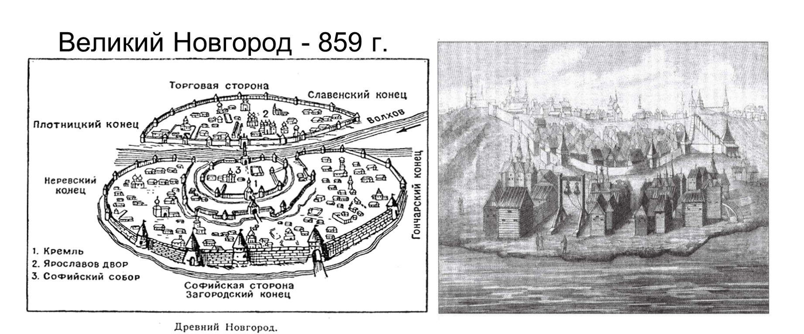

Когда был основан город?
Официальной датой основания Новгорода считается 859 год, по первому упоминанию города в поздней Никоновской летописи (XVI век). В «Повести временных лет», созданной в XII веке, город впервые упоминается под 862 годом. Однако летописи могли относить существование города к этому времени ретроспективно, поскольку надёжно датированные археологические слои Новгорода относятся ко времени не ранее 930-х годов. По мнению археологов, Новгород появился примерно на рубеже IX—X веков или в начале X века у истока Волхова из Ильменя. Во второй четверти X века был построен первый мост через Волхов.
В 1136 году Новгород стал первой вольной республикой на территории феодальной Руси (с этого момента полномочия новгородского князя были резко ограничены). В XII—XV веках Новгород входил в Ганзейский торговый союз. Для отрезка времени начиная с 1136 года и заканчивая 1478 годом, когда Новгород утратил (в результате победы московского князя Ивана III Великого над новгородцами) политическую самостоятельность, по отношению к Новгородской земле принято применять термин «Новгородская республика» (правительство последней использовало обозначение Господин Великий Новгород).
История Великого Новгорода
Особенностью Новгорода является то, что он всегда был и остаётся разделён на две части — Торговую и Софийскую стороны, границей между которыми является река Волхов. В прошлом это деление носило не только географический характер, но отражалось и на внутренней истории города. Соперничество жителей Торговой и Софийской сторон нередко приводило к открытым столкновениям на Великом мосту через реку. Средневековый город сложился на месте более ранних селений у истока Волхова из Ильменя, где сгусток стоянок и поселений прослеживается со времён неолита (4—3 тысячелетия до н. э.). Обзор досредневековых реалий Новгородской земли подробно даётся в ряде материалов.
Новгород не подвергся монгольскому нашествию; хотя он и платил дань Орде, но сохранил уникальные памятники древнерусской архитектуры домонгольского периода (наиболее известный из них — Софийский собор) и был единственным из древних русских городов, избежавшим упадка и дробления в XI—XII веках.
В 1569—1570 годах Новгород подвергся опричному погрому Ивана Грозного, сопровождавшемуся массовыми убийствами горожан. В 1611—1617 годах город был под властью шведов. После основания Санкт-Петербурга город утратил своё экономическое значение, в частности, оставшись в стороне от основных торговых путей. С 1727 года Новгород стал центром Новгородской губернии. С 1927 года стал частью Ленинградской области. Во время Великой Отечественной войны город был занят немцами и почти полностью разрушен. После освобождения вновь стал областным центром, был отстроен заново, многие исторические здания были восстановлены.
Современный Великий Новгород
В 1992 году решением ЮНЕСКО исторические памятники Новгорода и окрестностей отнесены к всемирному наследию.
11 июня 1999 года президент Российской Федерации Б. Ельцин подписал федеральный закон «О переименовании г. Новгорода — административного центра Новгородской области в город Великий Новгород»[17][18]. Также в 1990-е годы были восстановлены многие древние названия улиц в центре города.
В 2004 году в городе был основан «Валдайский клуб». В 2003, 2006 и 2007 годах Великий Новгород становится победителем Всероссийского конкурса финансового развития экономики России «Золотой рубль» по экономическим показателям финансового развития в категории «столица» по Северо-Западному Федеральному округу[94]. В 2010 году город стал победителем конкурса «Самый благоустроенный город России».
28 октября 2008 года Великому Новгороду присвоено звание «Город воинской славы»[95]. В ознаменование присвоения городу почётного звания 8 мая 2010 года был открыт памятник-стела «Город воинской славы».
С 2018 года Великий Новгород входит в новый туристический маршрут по северо-западным городам России — «Серебряное ожерелье России».
Население Великого Новгорода — 224 286 чел. (2021); 90-е место в России, это около трети жителей области, площадь 90,08 км².